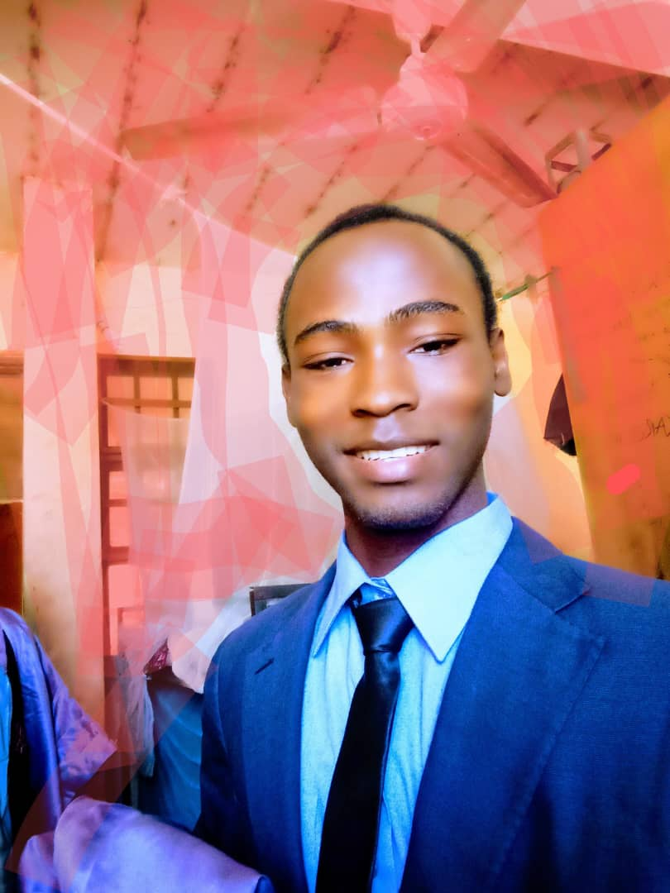

UniVerse is a campus-focused social platform created by Nigerian university students to support meaningful communication within university communities.
Many students currently rely on general social networks that are not designed around campus life. This often leads to fragmented discussions, limited relevance, and concerns around privacy and community control.
UniVerse was developed to provide a more focused environment where students can interact around shared academic spaces, interests, and campus experiences.
Platform principles
- Participation centered around individual university communities
- Optional anonymous posting for selected features
- Topic-based channels for academics and student life
- Stories for short lived, casual sharing
- Designed with student privacy and simplicity in mind
UniVerse is currently being piloted in selected universities, with gradual expansion planned to additional campuses over time.
Built by students, shaped by campus needs.
Meet the Co-Founders

Umar Mohammed Batako (BTK)
Lead Developer • UDUS Graduate '25
I built the technical foundation of UniVerse to bridge the communication gap I experienced on campus.

Fidal Ahmad Baba
UI/UX Designer & Graphics
Fidal is the creative mind behind the UniVerse interface, layout, and visual marketing identity.
Proudly developed by Team DR BTK.